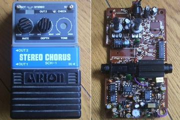

ARION SCH-1 STEREO CHORUS 修理
2013年09月08日 カテゴリー：修理・改造・解析

ARION SCH-1 STEREO CHORUSをジャンクで入手したので修理しました。
ジャンク扱いの理由は「音×」となっていました。確かに一応音は出ますがガサゴソ音が出たり音が小さかったりするようです。ジャック部分を掃除して、電解コンデンサを交換するとあっさりと直りました。
私はビンテージ物に興味はないので改造しました。使わないトーン部分やステレオ機能を省き、中身がスカスカになっています。そのうちさらに改造するかもしれません。
ARION STEREO CHORUSについてメモしておきます。
現行品は型番SCH-Zでスリランカ製、以前こちらの記事で回路について書いています。SCH-ZDという代理店オリジナルのモディファイモデルも発売されています。
型番SCH-1のものは旧型で現在は製造されていませんが、いまだに人気らしいです。ケースが灰色のものが初期の日本製で、基板を見ると「PRINCE JAPAN SCH-1a」と書いてあります。ケースが黒色のものは後期のスリランカ製のようです。現在出回っているSCH-1の回路図はおそらく後期型で、私が今回入手した初期SCH-1から少し回路が変更になっています。具体的にはR60、R61、C39、C40あたりの部品が追加されています。音に関してはあまり影響はないと思います。
SCH-ZとSCH-1との大きな違いはトーン回路のようです。コーラスエフェクターは原音にビブラート音を混ぜることによって効果を得ますが、SCH-Zではビブラート音に対しトーン回路が働き、SCH-1では原音に対しトーン回路が働きます。トーン回路自体も違うものが使われています。